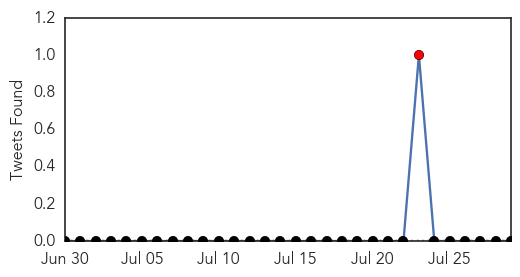
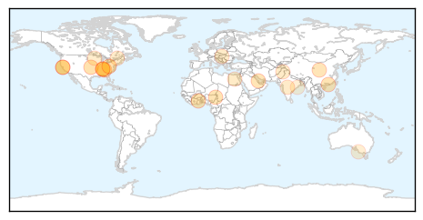
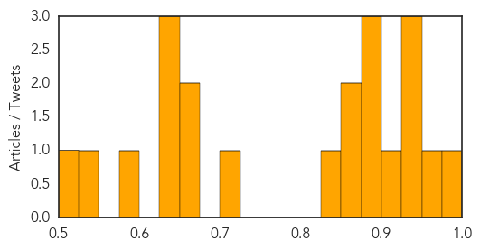

West Nile Virus
30-Day Web Trend
8 alerts, 3 warnings

30-Day Twitter Trend
3 alerts, 0 warnings

Article Locations

Article Confidences

Top Articles:
- 0.992
- Lakewood resident first 'probable' West Nile Virus case
- 0.978
- Hillsborough advisory issued for West Nile encephalitis virus
- 0.977
- Lakewood resident is Ohio’s first case of West Nile virus
- 0.973
- Lakewood resident could be Ohio's first 2015 case of West Nile virus
- 0.954
- City of Sugar Land
- 0.927
- City mosquitoes test positive for West Nile
- 0.854
- Pork linked to Washington salmonella outbreak, food safety emphasized
- 0.824
- Commissioners remind public of mosquito abatement program
- 0.752
- Washington County woman has West Nile Virus, first human case in Idaho this summer
- 0.629
- WATCHFUL MOSQUITO EYES: Edwardsville, Alton officials monitor and treat areas for West Nile Virus prevention
Top Tweets:
-
No tweets found for Jul 29, 2015
Hepatitis
30-Day Web Trend
4 alerts, 1 warnings

30-Day Twitter Trend
1 alerts, 0 warnings

Article Locations
Article Confidences
Top Articles:
- 0.982
- Health Officials Warn About Rise in Hepatitis C Cases
- 0.969
- Hepatitis C on the rise among area youth via drug abuse
- 0.948
- Health service to begin immunisaton against Hepatitis B
- 0.942
- Tackling Hepatitis… World Hepatitis Day seeks to create integrated response in the fight against the disease – NPHRL tested over 5450 samples
- 0.930
- Health agency investigates spike in syphilis cases
- 0.917
- Syphilis cases spike in Berkeley, Cabell, Mon, Wood
- 0.891
- W.Va. health agency investigates spike in syphilis cases
- 0.886
- Hepatitis C patients continue with struggle for new treatments
- 0.879
- 20 million Nigerians infected with Hepatitis B, C
- 0.869
- Hamilton County Health Department Announces Immunization Requirements For Students Going Back To School
- 0.863
- Viral Hepatitis causes 1.4 million deaths every year globally; HMC raises awareness on preventive measures against the disease
- 0.840
- Unintentional transmission of virus the biggest challenge, say doctors
- 0.710
- Hepatitis B remains global health concern
- 0.664
- Hepatitis becomes one of most devastating global healthcare issues
- 0.659
- 'Prevent hepatitis; Act now,' declares UN targeting hepatitis B and C
- 0.644
- Hungarian Official Urges Highrisk Groups To Get Hepatitis C Test
- 0.639
- 'Prevent hepatitis; Act now,' declares UN targeting hepatitis B and C
- 0.632
- National Collaborative Hepatitis C Network NCHCN CIHR PHAC Naglaa Shou
- 0.595
- The Osakis Review
- 0.529
- Warning from livestock carrier that Q fever vaccine not guaranteed protection
- 0.507
- NasVac Opens A New Avenue for Hepatitis B Virus Treatment
Top Tweets:
-
No tweets found for Jul 29, 2015